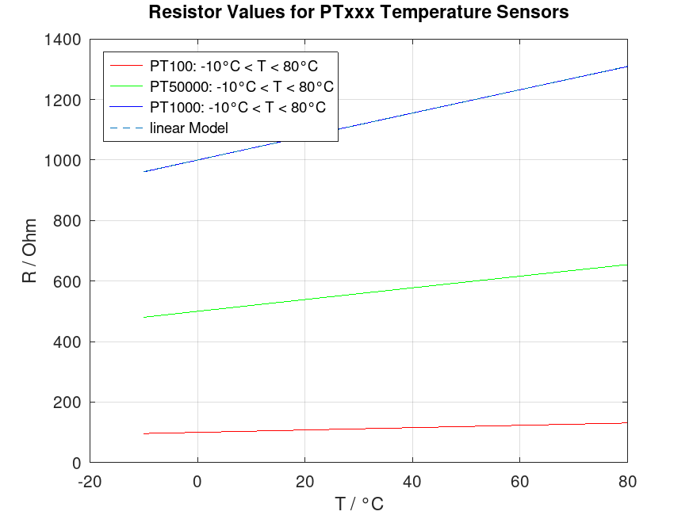
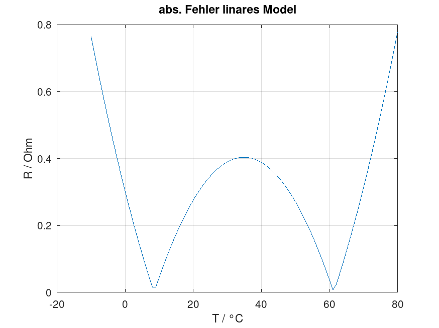
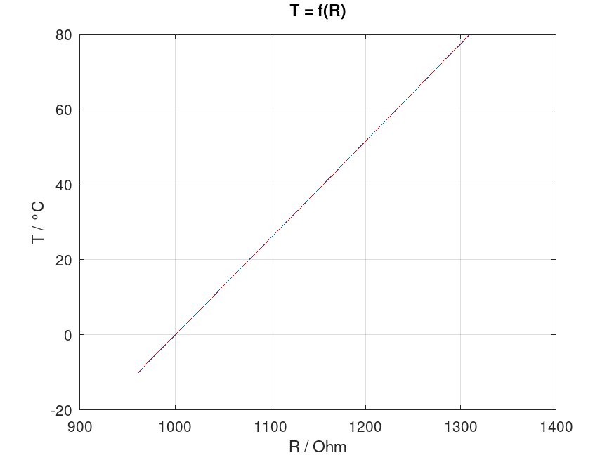
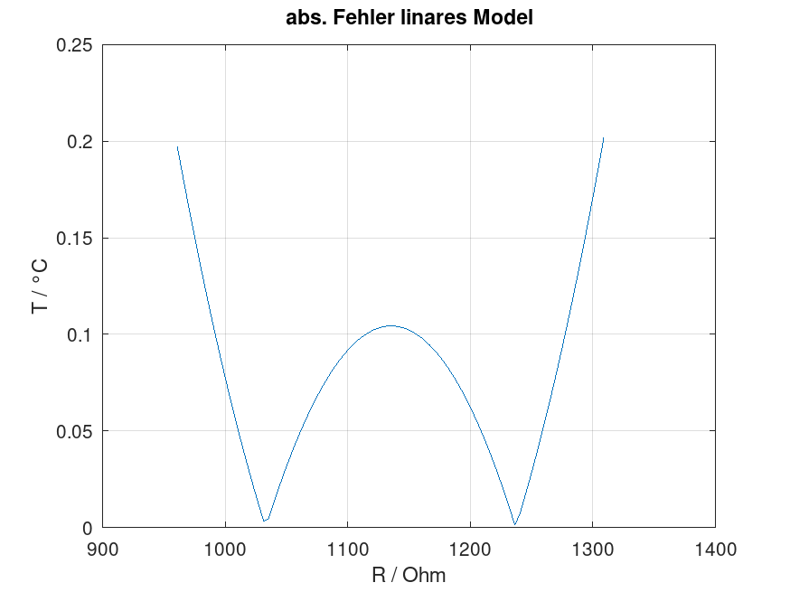
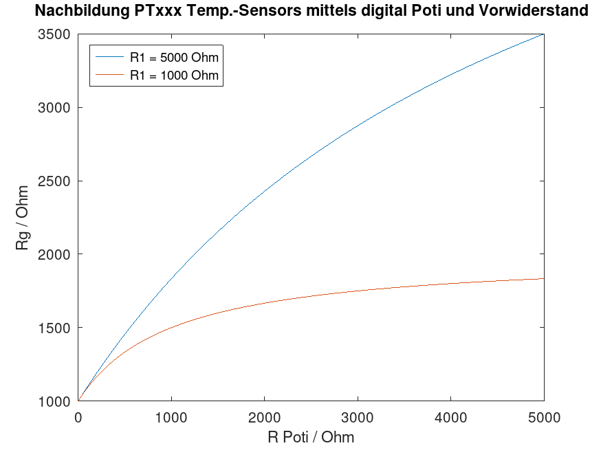

clc;clear;close;
% % PTxxx Sensoren sind nach DIN EN 60751 genormt. Die Kennlinie lautet
$$ R_{PTxx}(T) = \left\{\begin{array}{ll} R_0 * \left( 1 + A * T + B * T^2 + C * [T - 100] * T^3 \right), & -50<T<0°C \\ R_0 * \left( 1 + A * T + B * T^2 \right), & 0<T<600°C \end{array}\right. $$
Die Werte der Koffizienten lauten (Einheit unbekannt, wurden leider in den Quellen auch nicht angegeben)
A = 3.90802 * 1e-3; B = -5.802 * 1e-7; C = -4.2735 * 1e-12;
Die Widerstandswerten in Ohm bei 0°C lauten
R0_100 = 100; R0_500 = 500; R0_1000 = 1000;
Laufvariable (X-Achse): Temperatur der beiden Definitionsbereiche in der Einheit °C in 1° Schritten. Betrachtet wird ein technisch sinnvoller Bereich aus der Gebaudetechnik.
t1 = -10 : 1 : 0; t2 = 0 : 1 : 80;
Definition eines Funktionshandler [t = Laufvariable Temperatur] und Berechnung der Kennlinien
f1 = @(R0, A, B, C, t) (R0 * (1 + A .* t + B .* t.^2 + C .* [t - 100] .* t.^3 )); f2 = @(R0, A, B, C, t) (R0 * (1 + A * t + B * t.^2)); R_100_1 = f1(R0_100, A, B, C, t1); R_100_2 = f2(R0_100, A, B, C, t2); R_500_1 = f1(R0_500, A, B, C, t1); R_500_2 = f2(R0_500, A, B, C, t2); R_1000_1 = f1(R0_1000, A, B, C, t1); R_1000_2 = f2(R0_1000, A, B, C, t2); linKoef = polyfit( [t1, t2], [R_1000_1, R_1000_2], 1 ); lin = [t1, t2] * linKoef(1) + linKoef(2); slope = linKoef(1) offsett = linKoef(2)
slope = 3.8676 offsett = 1000.3
Ein lineares Model der PT1000 Kennline ist ebenfalls in der Graphik eingezeichnet. Die Linearisierung der PT1000 Kennline ist erstaunlich deckungsgleich.
figure() plot([t1, t2], [R_100_1, R_100_2], 'r') hold on plot([t1, t2], [R_500_1, R_500_2], 'g') plot([t1, t2], [R_1000_1, R_1000_2], 'b') plot([t1, t2], lin, '--') grid on; hold off; title(['Resistor Values for PTxxx Temperature Sensors']) xlabel('T / °C') ylabel('R / Ohm') l1 = sprintf('PT100: %d°C < T < %d°C', min(t1), max(t2)); l2 = sprintf('PT500: %d°C < T < %d°C', min(t1), max(t2)); l3 = sprintf('PT1000: %d°C < T < %d°C', min(t1), max(t2)); legend( l1,l2,l3,'linear Model', 'Location', 'NorthWest')
errAbs = [R_1000_1, R_1000_2]-lin; sprintf('Der maximale, absolute Fehler betraegt nur %d Ohm', max(abs(errAbs))) figure() plot([t1, t2], abs(errAbs)); grid on; title(['abs. Fehler linares Model']) xlabel('T / °C') ylabel('R / Ohm')
ans = Der maximale, absolute Fehler betraegt nur 0.77884 Ohm
Fuer die Temperaturmessung in der Praxis, mit Hilfe eines geeigneten IC zur Auswertung (z.B ADS124 der Firma Texas Instruments) und Microcontroller ist eine Wandlung der gemessenen Spannung (indirekte Messung des elektrischen Widerstandes des PT1000 ) in Temperatur notwendig. Es gilt also die Beziehung T = f®. Dementsprechend muessen X und Y Achse getauscht werden.
linKoef = polyfit( [R_1000_1, R_1000_2], [t1, t2], 1 ); lin = [R_1000_1, R_1000_2] * linKoef(1) + linKoef(2); slope = linKoef(1) offsett = linKoef(2) figure() plot([R_1000_1, R_1000_2], [t1, t2], 'r'); hold on; plot([R_1000_1, R_1000_2], lin, '--'); grid on; hold off; xlabel('R / Ohm') ylabel('T / °C') title(['T = f(R)'])
slope = 0.2586 offsett = -258.63
Auch hier entsteht ein Fehler aufgrund der Linearisierung.
errAbs = [t1, t2]-lin; sprintf('Dieser betraegt maximal %d °C', max(abs(errAbs))) figure() plot([R_1000_1, R_1000_2], abs(errAbs)); grid on; title(['abs. Fehler linares Model']) xlabel('R / Ohm') ylabel('T / °C')
ans = Dieser betraegt maximal 0.201932 °C
Es gibt die Ueberlegung einen PTxxx Sensor durch einen "inteligenten, elektronischen Widerstand" nachzubilden. Dieser koennte, mit einer kommunikations Schnittstelle versehen, an eine Bestehende Gebaeudetechnik Installation angebracht werden um so z.B. in die Brenner Regelung einzugreifen (Der Steuerung simulieren die Boilertemp. wäre bei 60°C und sie müsse nix tun, dabei ist die tatsächliche Temperatur viel niedriger und der z.B. Sonnenkollektor oder die Wärmepumpe füttern den Puffer)
Die fuer die Gebauedetechnik relevanten Temperaturen sind 0°C bis 100°C was bei Verwendung eines PT1000 die Widerstandswerte von ca. 1000 Ohm ... 1500 Ohm entspricht. Ein Digital Poti (zB. MCP41HV51) wird allerdings Angeboten in den Abstufungen 5k, 10k, 50k, 100k. es bedarf also eines weiterne, parallelen Widerstandsnetzwerk.
Rv = 1e3; % Vorwiderstand R11 = 5e3; % Parallelwiderstand R12 = 1e3; % Parallelwiderstand Rp = 0:1:5e3; % Laufvariable Digital Poti
Notiz: Zu unterscheiden wäre noch die Auswertung der temperaturabhängigen Spannung. Wird diese tatsächlich mittels konst. Messtrom durch einen Widerstand (PTxxx) realisiert mit Sicherheitsüberwacheung, dass wirklich Strom fliesst, oder handelt es sich lediglich um einen triviale Spannungsmessung. Bei letzterem Ansatz kann die aufwendige PTxxx Nachbildung entfallen und einfach nur ein Digital to Analog Converter (DAC) zum Einsatz kommen.
$$R_{PT} = R_V + \left( \frac{1}{R_1} + \frac{1}{R_p} \right)^1 $$ $$R_{PT} = R_V + \left( \frac{1}{\frac{1}{R_1} + \frac{1}{R_p}} \right) $$
Rg1 = Rv + (R11.*Rp./(R11+Rp)); Rg2 = Rv + (R12.*Rp./(R12+Rp)); figure() plot(Rp, Rg1) hold on plot(Rp, Rg2) title(['Nachbildung PTxxx Temp.-Sensors mittels digital Poti und Vorwiderstand']) ylabel('Rg / Ohm') xlabel('R Poti / Ohm') legend( ['R1 = ' num2str(R11) ' Ohm'], ['R1 = ' num2str(R12) ' Ohm'], 'Location', 'NorthWest')
https://m.reissmann.com/fileadmin/templates/_media/produkte/pdf/st_pt_100_de.pdf https://temperatur-profis.de/temperaturfuehler/pt100-oder-pt1000/
Empfohlener Messstrom: 1mA PT100 / 0,5mA PT500 / 0,3mA PT1000 (Eigenerwärmung muss berücksichtigt werden)
% f2 = @(Rv, R1, x) (Rv + (R1 ./ (R1./x + 1))); % f1 = @(Rv, R1, x) (Rv + (R1*x ./ (R1+x)));
SmartCube 360 GmbH Lukas Bartels 2024